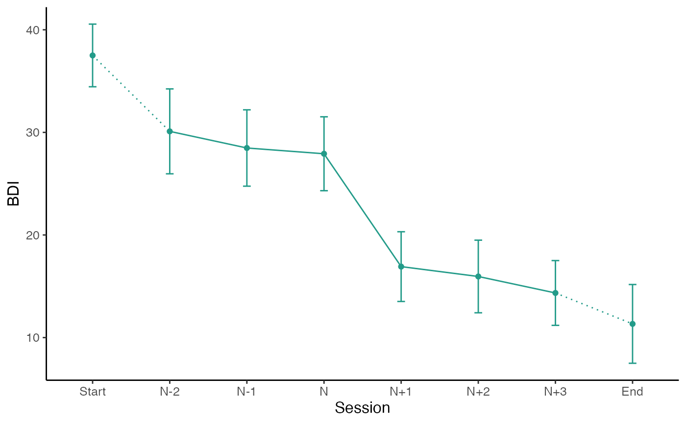

Generates a plot of the mean values around the sudden gain using ggplot.
This can be used to plot the primary outcome or secondary measures.
The parameters starting with "group" allow to plot the average gain magnitude by group.
Further ggplot2 components can be added using + following this function.
plot_sg( data, id_var_name, tx_start_var_name, tx_end_var_name, sg_pre_post_var_list, ylab, xlab = "Session", colour_single = "#239b89ff", colour_group = c("viridis", "ggplot", "grey"), viridis_option = c("D", "A", "B", "C"), viridis_begin = 0, viridis_end = 1, group_var_name = NULL, group_levels = NULL, group_labels = NULL, group_title = NULL, apaish = TRUE )
| data | A |
|---|---|
| id_var_name | String, specifying the name of the ID variable. |
| tx_start_var_name | String, specifying the variable name of the first measurement point of the intervention. |
| tx_end_var_name | String, specifying the variable name of the last measurement point of the intervention. |
| sg_pre_post_var_list | Vector, specifying the variable names of the 3 measurement points before, and the 3 after the sudden gain, for the measure being plotted. |
| ylab | String, specifying the label for the y axis i.e. the name of the measure being plotted. |
| xlab | String, specifying the label for the x axis, e.g. |
| colour_single | String, specifying the colour of the plot for one group. |
| colour_group | String, specifying the discrete colour palette to be used for the groups. |
| viridis_option | String specifying the colour option for discrete viridis palette, see |
| viridis_begin | Numeric, specifying hue between 0 and 1 at which the viridis colormap begins, see |
| viridis_end | Numeric, specifying hue between 0 and 1 at which the viridis colormap ends, see |
| group_var_name | String, specifying the variable name of the group variable. |
| group_levels | Vector, specifying the levels as numeric for the groups in |
| group_labels | Vector, specifying the label names as strings for the groups in |
| group_title | String, specifying the title that will be used for the groups specified in |
| apaish | Logical, make plot APA publishable. |
A plot of the mean values around the sudden gain, for the measure specified.
# First create a bysg (or byperson) dataset bysg <- create_bysg(data = sgdata, sg_crit1_cutoff = 7, id_var_name = "id", tx_start_var_name = "bdi_s1", tx_end_var_name = "bdi_s12", sg_var_list = c("bdi_s1", "bdi_s2", "bdi_s3", "bdi_s4", "bdi_s5", "bdi_s6", "bdi_s7", "bdi_s8", "bdi_s9", "bdi_s10", "bdi_s11", "bdi_s12"), sg_measure_name = "bdi")#>#># Plot average change of BDI values around the period of the sudden gain plot_sg(data = bysg, id_var_name = "id", tx_start_var_name = "bdi_s1", tx_end_var_name = "bdi_s12", sg_pre_post_var_list = c("sg_bdi_2n", "sg_bdi_1n", "sg_bdi_n", "sg_bdi_n1", "sg_bdi_n2", "sg_bdi_n3"), ylab = "BDI", xlab = "Session")#> Warning: Removed 27 rows containing non-finite values (stat_summary).#> Warning: Removed 27 rows containing non-finite values (stat_summary).#> Warning: Removed 14 rows containing non-finite values (stat_summary).#> Warning: Removed 8 rows containing non-finite values (stat_summary).#> Warning: Removed 10 rows containing non-finite values (stat_summary).